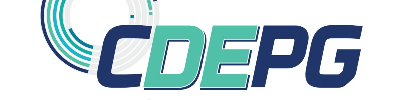

Poder Público
Prefeituras, secretarias e autarquias com demandas de inovação, gestão e tecnologia pública.
Cadastrar demandaIniciativa UEPG · Ponta Grossa, PR
O PIS conecta desafios reais de organizações e poder público com projetos desenvolvidos por estudantes e professores da UEPG.
O Diagnóstico
Tem o problema. Não tem a equipe.
Tem a verba. Não tem o especialista.
Tem a vontade. Não tem o caminho.
O que nunca falta é o problema.
O PIS resolve o que estava faltando.
Nosso ecossistema
Uma rede de atores unidos por um objetivo: transformar desafios reais em soluções com impacto.
Prefeituras, secretarias e autarquias com demandas de inovação, gestão e tecnologia pública.
Cadastrar demandaOrganizações que precisam de soluções com rigor acadêmico, perspectiva inovadora e custo acessível.
Cadastrar demandaONGs, associações e coletivos com desafios sociais e comunitários que demandam soluções criativas.
Cadastrar demandaUniversitários que querem aplicar conhecimento em problemas reais e construir portfólio com impacto.
Ver projetos abertosAcadêmicos que buscam impacto prático e integração entre ensino, pesquisa, extensão e inovação.
Propor projeto
Você descreve o desafio real da sua organização.
Sem formulário complexo. Sem burocracia acadêmica.
Só o problema que precisa sair da gaveta.
Nossa equipe analisa, categoriza e prepara
sua demanda para ser conectada com quem
tem o conhecimento certo para resolvê-la.
Estudantes e professores da UEPG propõem
e desenvolvem a solução — com orientação,
método acadêmico e compromisso real.
Resultado documentado, solução aplicável,
impacto real. Para você e para quem
vai aprender com esse processo.
Diferenciais
Demandas reais — não exercícios acadêmicos. Cada projeto resolve um problema que existe de verdade.
Soluções que ficam na comunidade. O conhecimento gerado aqui é aplicado aqui — e se expande a partir daqui.
Equipes de diferentes cursos. A melhor solução raramente vem de uma única área do conhecimento.
Triagem, desenvolvimento e entrega com metodologia. Inovação com responsabilidade — não improviso.
Sobre nós
O PIS nasceu na UEPG com uma missão simples: colocar o conhecimento universitário a serviço de quem precisa.
Hoje, somos uma plataforma que conecta o poder público, empresas, estudantes e professores em torno de desafios reais — e transforma esses desafios em soluções com método, rigor e impacto.
Parceiros

Comece agora
Não deixe o problema mais tempo na gaveta.